ismerd fel
.(2) ren
FM – tavalyi jegyzeteim
- tubulus proximalis vs distalis
- "rétegek"
- cortex
- medulla
- zona interna
- zona externa
- gyüjtőcsatornák
- kapillárisok
- lamina parietalis vs visceralis (capsula_glomeruli_Bowman) --------------------
- pars recta vs convoluta
- macula_densa
- vas afferens vs efferens
- vízelvezetőpólus & érpólus
- sejtmag ➜ podocyta vs fenesztrált_endothel --------------------
- (tubulus_reuniens)
- (mesangiumsejtek ➜ extraglomerularis vs intraglomerularis)
- (juxtaglomerularis-sejtek)
vesepapilla, gyűjtőcsatornák beszájadzása

1 ► pelvis_renalis (calyx_minor) lumene
2 ► 1rKh a vesepapilla csúcsán
3 ► ductus_papillaris(Bellini)
4 ► gyűjtőcsatorna beszájadzása
5 ► tubulus_intermedius
6 ► kapilláris
(7) ► hyalin = kicsapódott fehérje
zona_interna(medulla) (hosszmetszet)

1 ► gyűjtőcsatorna
2 ► tubulus_intermedius
3 ► kapilláris
(4) ► gyűjtőcsatorna fala
zona_externa(medulla)

1 ► gyűjtőcsatorna
2 ► pars_recta tubulus proximalis/distalis
3 ► tubulus_intermedius
4 ► kapilláris
zona_interna(medulla)

1 ► gyűjtőcsatorna
2 ► tubulus_intermedius
3 ► kapilláris
4 ► venula
zona_externa(medulla)

1 ► gyűjtőcsatorna
2 ► pars_recta
3 ► tubulus_intermedius
4 ► kapilláris
cortex

1 ► glomerulus
2 ► lamina_parietalis capsula_glomeruli_Bowman
3 ► pars_convoluta tubulus_proximalis
4 ► pars_convoluta tubulus_distalis
5 ► efferens arteriola
6 ► polus_glomeruli = vizeleti_pólus ➜ tubulus_proximalis kezdete
(7) ► kapilláris
(8) ► kapilláris
(9) ► kapilláris
10 ► podocyta ~ lamina_visceralis capsula_glomeruli_Bowman
11 ► mesangiumsejtek
(12) ► fibrocyta
cortex

1 ► glomerulus
2 ► lamina_parietalis capsula_glomeruli_Bowman
3 ► pars_convoluta tubulus_proximalis
4 ► pars_convoluta tubulus_distalis
5 ► afferens arteriola §
6 ► macula_densa
7 ► polus_glomeruli = vizeleti_pólus ➜ tubulus_proximalis kezdete
8 ► endothelsejt
9 ► podocyta ~ lamina_visceralis capsula_glomeruli_Bowman
10 ► precapillaris arteriola
11 ► postcapillaris venula
cortex

1 ► glomerulus
2 ► lamina_parietalis capsula_glomeruli_Bowman
3 ► pars_convoluta tubulus_proximalis
4 ► pars_convoluta tubulus_distalis
5 ► afferens arteriola
6 ► macula_densa
7 ► polus_glomeruli = vizeleti_pólus ➜ tubulus_proximalis kezdete
8 ► kapilláris
(9) ► fibrocyta
10 ► macula_densa ()
cortex

1 ► glomerulus
2 ► lamina_parietalis capsula_glomeruli_Bowman
3 ► pars_convoluta tubulus_proximalis
4 ► pars_convoluta tubulus_distalis
5 ► hilus_glomeruli = érpólus ~ afferens arteriola
6 ► macula_densa
7 ► polus_glomeruli = vizeleti_pólus ➜ tubulus_proximalis kezdete
8 ► tubulus_reuniens
.(3) vesica_biliaris
ELMÉLET - tavalyi jegyzet alapján
- tunica_mucosa
- 1rHh mikrobolyhos
- lamina_propria ➜ nyálkahártya-redők
- tunica_muscularis (réteg nincs) (simaizom)
- tunica_adventitia / (sub)serosa
- intrahepatikus::: epekapilláris ➜ Hering-csatorna ➜ (=) ductus_interlobularis ➜ ductus_hepaticus dexter/sinister ➜ ductus_hepaticus_communis 2
- extrahepatikus::: képen
- 1rHh kutikulával
- lamina_muscularis
- tela_submucosa
epeút?
epehólyagot mi béleli?
epehólyagban mely rétegek hiányoznak?
(azért, mert csupán egy kivezetőcső megvastagodása) HistoCD + füzet
_

1 ► epithelium = 1rHh
(2-3) ►
4 ► nyálkahártyaredő
5 ► tunica_muscularis
6 ► tela_subserosa
7 ► tunica_serosa, hashártya
_

1 ► epithelium = 1rHh
2 ► tunica_muscularis
3 ► lamina_propria
4 ► lamina_propria
(5-7) ► nyálkahártyafülke, melyet a metszési sík izolált, és így önálló lumennek tűnik, stb. (lényeg, hogy a redő a metszési sík következtében lesz ilyen a képen)
.(4) epididymis
ELMÉLET - tavalyi jegyzet alapján
- FONTOS!!! téglalapot rajzoljak inkább, aminek alja és teteje kissé domború
- ductulus_efferens_testis vs ductus_epididymis
- ductus_epididymis ➜ 2mHH + stereocilium
- ductulus_efferens_testis ➜ 1m/2m-Hh/Kh + kinocilium
- 2mHH ➜ fősejt & bazális sejt
- simaizom + ktsz (veszi körbe a csatornákat) --------------------
- tunica_albuginea ➜ kollagénrostos kötőszövet
- tunica_vaginalis_testis lamina_parietalis ➜ mesothel-sejtek
- tömött kollagénrostos kötőszövet
- tubulus_seminiferus_convolutus(=) (kanyarulatos)
- 1zárt hurkot alkotó kanyarulatos csatornából áll 1lobulus
- mediastinum_testisnél összefutnak
- tubulus_seminiferus_rectus (egyenes)
- rete_testis (hálózat)
- tubulus_seminiferus_convolutus
- laza kötőszövet, benne:
- Leydig-sejtek (szigetet alkotnak)
- erek
- 1rétegű köbhám
- 1rétegű köbhám/laphám
- tesztoszteront termelnek
- (Reinke-fehérjekristalloidokat tartalmaznak, de nemlátszik, csak elektronmikroszkóppal)
- spermatogenesis
- pubertáskorban kezdődik el
- tubulus_seminiferus_contortus
- spermatogonium(=)
- lamina_limitans mellett találhatók közvetlen (Sertolli-sejteken kívül)
- osztódik mitózissal ➜ kb fele A típusú, fele B típusú lesz
- A típusúnál nem történik változás, csinálja tovább ugyanezt
- B típusú 1szer osztódva mitózissal 2primer_spermatocitává válik
- primer_spermatocita(=) ➜ megkezdi meiózist
- primer_spermatocita ➜ meiózis I ➜ 2db szekunder_spermatocita
- szekunder_spermatocita ➜ meiózis II ➜ 2db sperm()ida
- spermio()genesis ➜ kb. 2hónap alatt a spermatida átalakul spermiummá (sejtdifferenciálódás útján, tehát osztódás nincs már!)
- kettő egymástól nehezen különböztethető meg, ezért...
- ...mivel secunder állapot csak nagyon-rövid ideig van, ezért feltételezhetően primer lesz látható
- kitöltik a herecsatornát ➜ lamina_limitanstól a lumenig nyúlik
- termelnek ➜ piruvát, laktát, inhibin §
- fagocitózis
- citoplazmájukban zajlik a spermiogenezis
- fej
- sejtmag [n]
- kívülről acrosoma borítja ➜ benne lévő enzimek biztosítják zona_pellucidán való átjutást megtermékenyítés során
- nyak ➜ mitokondriumok ölelik körbe az ostort benne
- farok
- ostoros mozgást ezzel végzi
- keresztmetszet ➜ 9pár mikrotubulus körben, 2db középen (kinocilium, undulipódium)
- Golgi-készülékből fejlődött ki a spermiogenesis során
- magtól távolabbi centriolum ➜ farok
- citoplazmája nagyrésze lelökődik §
- FSH hormon szabályozza (hipofízis termeli)
- mitokondriumokban glikolízis
- normál ➜ 100millió/ml (1erekciónál 2-3ml ondó ürítés van)
- terméketlen ➜ 20millió/ml
- ductulus_efferens_testis ➜ caput
- ductus_epidiymidis ➜ caput & corpus & cauda
- csillag alakú lumen
- magas hengerhámsejtek / alacsony köbhámsejtek
- kinocilium borítja egy részét
- körülveszi vékony simaizomréteg
- lumenben spermiumok
- kétmagsoros stereociliumos hengerhám
- körülveszi vékony simaizomréteg
- lumenben spermiumok (+makrophagok)
- tereli a spermiumokat rete_testisből ductus_epididymidis fele
- egyre vastagabb a simaizomréteg
- egyre vékonyabb a hámréteg
- egyre kevésbé kanyargós a csatorna
- caput ➜ corpus & caudaban már nem lenne ductulus_efferens_testis
R testis - transversal

1 septula_testis
2 lubulus_testis
3 mediastinum_testis
4 plexus_pampiniformis
5 a.testicularis
6 fascia_spermatica_interna
7 cavitas_scroti
8 tunica_vaginalis_testis l.p./l.v.
9 tunica_albuginea
10 m.cremaster
11 fascia_spermatica_externa
12 tunica_dartos
13 cutis
14 septum_scrotis
15 epididymis
16 ductus_deferens
R testis - saggital

1 septula_testis
2 lobuli_testis
3 mediastinum_testis
4 rete_testis
5 tunica_albuginea
6 tubulus_seminiferus_contortus
7 tubulus_seminiferus_rectus
8 tunica_vaginalis_testis lamina_visceralis (=)
9 caput_epididymidis
10 ductulus_efferens_testis
11 ductus_epididymidis
12 ductus_deferens
FM-nél figyelnivalók
▉ tunica_albuginea milyen szövet? septula_testis milyen szövet?
▉ csatornák típusa & elhelyezkedés?
▉ parenchymát mi alkotja?
▉ tubulus_seminiferus_convolutus mi veszi körül?
▉ tubulus_seminiferus_rectus mi béleli?
▉ rete_testis_Hallerit mi béleli?
▉ Leydig-sejtek szerepe?
▉ neve? mikor? hol történik?
▉ leírása?

▉ képen milyen spermatocita látható?
▉ Sertolli dajkasejtek szerepe?(4)
▉ hímivarsejt felépítése?

▉ spermiogenesis ➜ leírás? szabályozása?
▉ mozgáshoz energiaszükségletét mi biztosítja?
▉ hímivarsejt száma / kiürített ondó?
▉ vesecsatornák a mellékhere mely részeiben találhatók?
▉ ductulus_efferens_testis jellemzés?
▉ ductulus_epididymidis jellemzés?
▉ kinociliumok szerepe?
▉ ductulus_epididymidis változása cauda irányába?
▉ mely szakaszon készült a metszet és miért?
mellékhere csatornái

1 ► ductulus_efferens_testis ➜ kinociliumos 1m/2m-Kh/Hh
2 ► ductus_epididymidis ➜ stereocilium TmHh
3 ► simaizom
4 ► precapillaris arteriola
(5) ► postcapillaris venula
ductulus_efferens_testis

(1) ► Kh-sejt
(2) ► Hh-sejt
3 ► TmHh
4 ► kinocilium
5 ► simaizom
6 ► postcapillaris venula
ductus_epididymidis

1 ► fősejt
2 ► bazális sejt
1+2 ► TmHh
3 ► simaizomsejt
4 ► stereocilium
.(5) oesophagus
ELMÉLET - tavalyi jegyzet alapján
- TENSLh
- lamina_muscularis SzövettanCD
- glandulae_oesophagae ➜ tela_submucosa-ban van
- glandulae_cardiacae = Schaffer-mirigy ➜ lamina_propria-ban van
- solitaer_nyirokfolliculus (MALT)
- glandulae_cardiacae = Schaffer-mirigyek ➜ felső és alsó részénél fordulnak csak elő
- kötőszövet
- glandulae_oesophagae ➜ mucosus-mirigyek, oesophagus fő mirigyei
- plexus_submucosus_Meissneri
- pars_abdominalist leszámítva adventitia (annál ugyanis "serosák")
epithelium mi alkotja?
kezdeti szakaszában mely réteg hiányzik?
2 előforduló mirigyet hogy tudom egymástól elkülöníteni?
lamina propria-ban mi található?
tela_submucosa-ban mi található?
tunica_adventitia vagy tela_subserosa és tunica_serosa van benne?
FM – tavalyi jegyzeteim
- tunica_mucosa
- eipthelium TENSLH
- lamina_propria
- lamina_muscularis
- tela_submucosa
- tunica_muscularis
- stratum_circulare
- stratum_longitudinale
- tunica_adventitia --------------------
- glandulae_oesophagae ➜ tela_submucosaban
- glandulae_cardiacae(Schaffer)
- lamina_propria-ban
- de csak a nyelőcső felső és alsó részénél fordulnak elő
- plexus_submucosus_Meissneri ➜ tela_submucosaban
- plexus_mientericus_Auerbachi ➜ tunica_muscularis 2rétege közt --------------------
- (harántcsíkolt vs simaizom)
kezdeti szakasza

1 ► TeNsLh
2 ► lamina_propria
3 ► tela_submucosa
4 ► tunica_muscularis ➜ harántcsíkolt
5 ► tunica_adventitia
nincs még lamina_muscularis
nincs még tunica_muscularis-nak 2jól elkülönülő stratumja
középső szakasza

1 ► TeNsLh !!!
2 ► stratum_germinativum
3 ► lamina_propria
4 ► lamina_muscularis
5 ► glandula_oesophagae (mucosus)
6 ► kivezetőcső lumene
7 ► kivezetőcső
8 ► tela_submucosa
9 + 10 ► tunica_muscularis = harántcsíkolt + sima
(11) ► venula
(12) ► leváló hámsejtek
középső szakasza

1 ► TeNsLh !!!
2 ► solitaer nyiroktüsző
3 ► lamina_propria
4 ► tela_submucosa
5 ► stratum_circulare (tunica_muscularis)
6 ► stratum_longitudinale (tunica_muscularis)
7 ► tunica_adventitia
tunica_muscularis ➜ harántcsíkolt + sima
oesophagus

1 ► glandulae_cardiacae(Schaffer) §
(2) ► kötőszöveti papillák
(3) ► kivezetőcső
4 ► stratum_germinativum
5 ► stratum_spinosum
6 ► stratum_superficiale
7 ► lamina_muscularis
.(6) TENYÉRbőr
FM
- stratum_lucidum ➜ nem mindig lehet kivenni
.ismerdfel
-
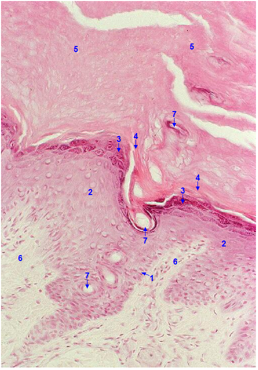
1 ► stratum_germinativum
2 ► stratum_polygonale = stratum_spinosum
3 ► stratum_granulosum
4 ► stratum_lucidum
5 ► stratum_corneum
6 ► ktsz papilla
7 ► verejtékmirigy kivezetőcsöve
.(7) penis
széli része

1 ► cutis
2 ► fascia_penis
3 ► tunica_albuginea
4 ► corpus_cavernosum
(5) ► csökevényes szőrtüsző fagggyúmirigyekkel
(6) ► verejtékmirigy
7 ► nn.dorsales_penis
8 ► kis véna

mély része

1 ► corpus_cavernosum
2 ► septum_penis
(3) ► összeköttetés a két corpus_cavernosum között
4 ► járulékos septum
5 ► tunica_albuginea
6 ► fascia_profunda(Buck)
7 ► paraurethralis járatok, maga a húgycső már nem látszik

corpus_spongiosum

1 ► urethra
2 ► paraurethralis járat
3 ► glandulae_urethrales_Littré (mucosus) ➜ paraurethrális járatokba nyílik
4 ► fascia_profunda(Buck)
5 ► tunica_albuginea
6 ► fascia_penis
urethra(pars_spongiosa) - TrHh
- Megjegyzés► endoepithelialis-mirigy és glandulae_urethrales_Littré ugyanolyan mucosus-sejtekből épül fel csak helyzetük más!

1 ► TrHh
2 ► mucosus endoepithelialis mirigy
3 ► paraurethralis járat, falában endoepithelialis mirigy(nyíl)
4 ► glandulae_urethrales_Littré (mucosus!) ➜ paraurethrális járatokba nyílik
5 ► intimapárna az erekben
intimapárna

1 ► intimapárna, a belsejében simaizom
2 ► arteriola

.(8) vesica_urinaria
_

1 ► urothelium §
2 ► lamina propria (tömöttebb szerkezetű)
3 ► tela_submucosa (lazább szerkezetű)
4 ► tunica_muscularis – stratum_circulare
5 ► tunica_muscularis – stratum_longitudinale
ELMÉLET
- lamina_muscularis nincs §
- tela_submucosa nincs a trigonum_vesicae területén (trigonum vesicae mesodermális eredetű) –––––––––––––––––––––––––––––––––––––
- tunica_mucosa ➜ !? trigonum_vesicae területét leszámítva redőzött
- epithelium ➜ urothelium
- ernyősejtek (csak ez nem ér le közülök a bazális membránra)
- polygonális
- bazális
- lamina_propria ➜ laza rostos ktsz (sok elasztikus rost) ()
- tela_submucosa ➜ laza rostos ktsz (sok elasztikus rost)
- tunica_muscularis (sok kollagénrost)
- stratum_longitudinale_internum
- stratum_circulare
- stratum_longitudinale_externum
- tunica_adventitia (esetleg subserosa, fennti részén)
- laza ktsz
- erek
- idegek
- zsírszövet
- esetleg ganglion-sejt található
rétegek
.(9) szem
ELMÉLET
- 1rKh felülről nézve
- natív ➜ nincs festve
- a sejteket melaninszemcsék töltik ki ➜ ezeket látjuk sötét színűnek, minden más világos
- sejthártyában és sejtmagban nincs melaninszemcse ➜ azok világosak
pigmenthám [natív]

1 ► sejtmag
2 ► sejthatár
3 ► melaninszemcsék
.(10) colon
ELMÉLET
FM – tavalyi jegyzeteim
- lamina_epithelialis = 1HH + kehelysejt
- Lieberkühn-crypták
- solitaer_folliculus
- lamina_muscularis
- tela_submucosa
- tunica_muscularis
- stratum_circulare
- plexus_myentericus_Auerbachi
- stratum_longitudinale TENIA
- tela_subserosa & tunica_serosa
.ismerdfel

1 ► Lieberkühn-kripták ➜ lamina_epithelialis = 1rHh kehelysejtekkel
2 ► tunica_mucosa ➜ lamina_muscularis
3 ► tela_submucosa
4 ► soliter-nyiroktüsző
5 ► tunica_muscularis ➜ stratum_circulare
6 ► tunica_muscularis ➜ stratum_longitudinale
7 ► plexus_myentericus_Auerbachi
.(11) HAJAS FEJbőr
.ismerdfel
-
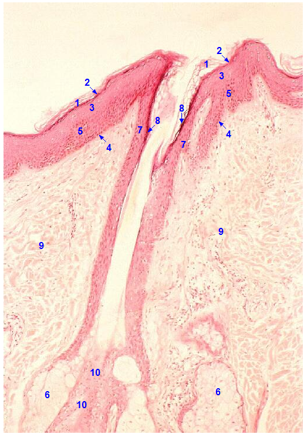
1 ► stratum_corneum
2 ► stratum lucidum & granulosum
3 ► stratum polygonale=spinosum
4 ► stratum basale=germinativum
(5) ► ktsz papilla érintőleges metszési síkban
6 ► faggyúmirigy
7 ► stratum polygonale & basale folytatódása szőrtüszőben
8 ► stratum granulosum & lucidum & stratum_corneum folytatódása szőrtüszőben
9 ► kollagén-rostok a cutisban
(10) ► gyökérhüvely érintőleges metszési síkban
§ ► szőrszál nincs a képen (mert még nem nőtt ki)
.ismerdfel
-
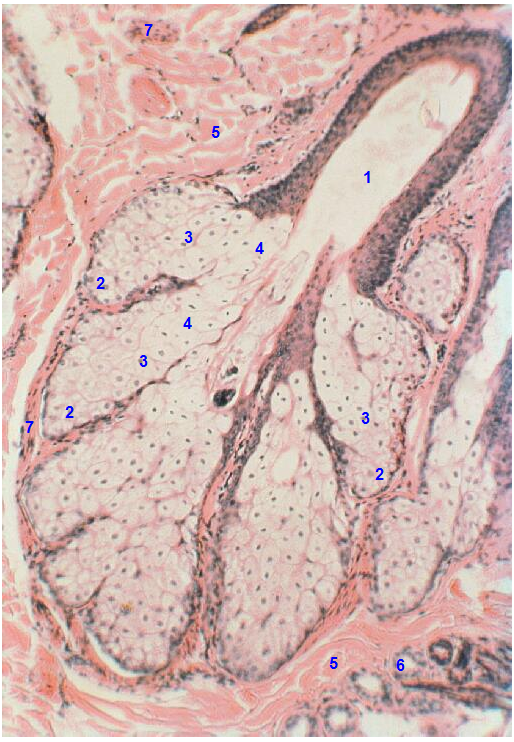
1 ► szőrtüsző (nincs benne szőrszál!)
2 ► matrix-sejtek, ezek osztódnak
3 ► degenerálódó sejtek ➜ zsírszerű anyagot termelnek, ami felhalmozódik bennük
4 ► szétesett sejtek ➜ ezek alkotják a sebumot=váladékot
5 ► kollagén rostok
(6) ► verejtékmirigy
7 ► m.arrector_pili
.ismerdfel
-
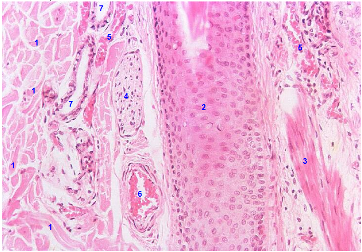
1 ► kollagén-rostok
2 ► szőrtüsző
3 ► m.arrector_pili
4 ► ideg
(5) ► postcapillaris_venula
6 ► venula
7 ► verejtékmirigy
.(12) prostata
ELMÉLET
- tömött_fibroelasztikus_ktsz
- simaizomsejt
- 20-30db
- periurethal = mucosus
- central = submucosus
- periferias (=fő)
- prostatakő
- besűrűsödött váladék
- 1r/Tm Kh/Hh
- pseudoapokrin ➜ valójában merokrin
- ugyanis apokrin esetében a membrannal együtt válna le a szekrétum
- merokrin esetében pedig csak exocitózissal jut ki a szekrétum §
- medencefenék izomzata (nem mindig van benne)
- felső 1/3 ➜ urothelium
- középső 1/3 ➜ Tr/Tm Hh
- alsó 1/3 ➜ TENSLH
- () ()
- pars_prostatica ➜ urothelium
- pars_membranacea ➜ TrHh
- pars_spongiosa
- többrétegű hh + néhány kehelysejt benne
- fossa_navicularistól már TENSLH
- A húgycső nyálkahártyájának proximal felé benyúló vak mellékjáratai a lacunae urethrales. Ezek mellett a corpus spongiosumban kétféle, nagyobbára mucinosus, mirigy található: a hámon belüli, ún. endoepithelialis mirigyek és a submucosába benyomuló nagyobb, elágazó mucinosus mirigyek, a Littre-féle mirigyek
mi alkotja ➜ stroma? tok?

mirigyek száma?
mirigyek típusai?

corpus_amylaceum ➜ magyarul? "összetétele mi"?
mirigyhám alkotója?
milyen szekréció zajlik? magyarázd!
haráncsíkolt izmok a szélén?
♀ hámja?
♂ hámja?
♂ 2.funkc.290
.széli része, főmirigyek

1 ► végkamrák ()
2 ► simaizom
3 ► végkamra részlete, mely a metszési sík miatt különállónak tűnik
4 ► ferde metszési síkban az egyrétegű hám többrétegűnek tűnik
JR ► végkamrák között simaizom van ➜ ez segít elkülöníteni a vesicula_seminalistól
.húgycső részletével

1 ► urethra epitheliuma - TrHh
2 ► főmirigyek kivezetőcsövének benyílása
3 ► colliculus_seminalis
4 ► colliculus_seminalis mirigyei
5 ► tokszerűen rendeződött simaizom
6 ► submucosus mirigyek
7 ► mucosus mirigyek
.idősebb korban

1 ► végkamrák ()
2 ► corpus_amylaceum = prostatakő
3 ► simaizom
JR ►
• idősebb korban több az izom, kevesebb a mirigyállomány
• "kövek" (azaz besűrűsödött váladékok) más mirigyekben (vesicula_seminalis, nyálmirigyek) is előfordulhatnak
• idősebb korban több az izom, kevesebb a mirigyállomány
• "kövek" (azaz besűrűsödött váladékok) más mirigyekben (vesicula_seminalis, nyálmirigyek) is előfordulhatnak
FM – tavalyi jegyzeteim
- corpus_amylaceum-ok = prostatakövek §
- mirigyhám ➜ 1r/Tm-Kh/Hh
- stroma = tömött_fibroelasztikus_ktsz + simaizomsejtek
- pseudoapokrin-mirigyek (valójában merokrin)
- urethra (pars_prostatica) ➜ epithelium TrHh
- colliculus_seminalis
- haráncsíkolt izmok a szélén ➜medencefenék izomzata (nem mindig van benne)
-------------------- ezek lehetnek benne, de nem feltétlen
- (ductus_ejaculatorius)
- (tok ➜ tömött_fibroelasztikus_ktsz és simaizomsejtek)
- (vegetatív ganglionsejtek ➜ prostata adventitiajaban)
.(13) glandula_submandibularis
.(seromucosus végkamra hosszmetszet)
-
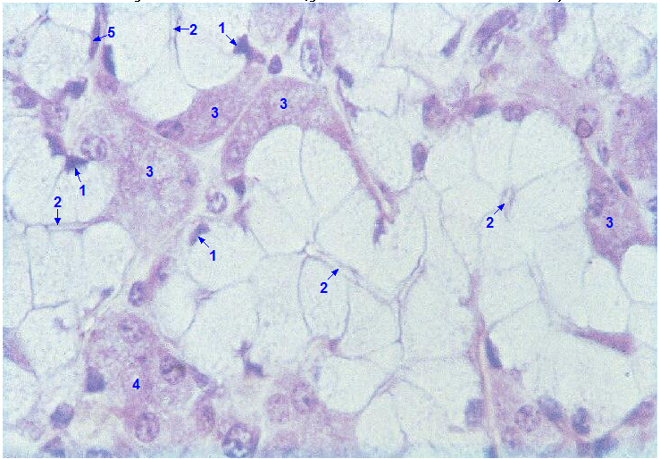
1 ► mucosus_sejt (nyíl a magra mutat)
2 ► végkamra lumene
3 ► serosus sapka
4 ► serosus végkamra
5 ► myoepithel sejt magja
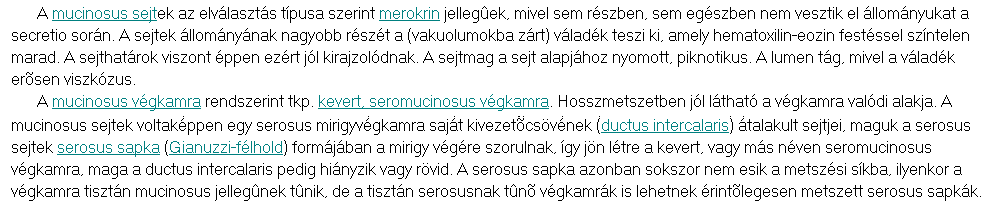
.(lebenykék és interlobularis kivezetőcső)
-
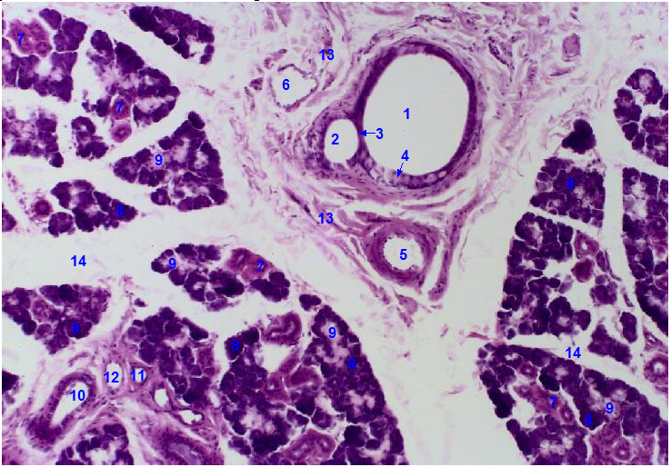
1 ► ductus_excretorius (ductus_interlobularis)
2 ► beléömlő interlobularis fő kivezetőcső
3 ► beszájadzásnál kialakuló hámtaraj, a metszési sík érintőleges
4 ► kehelysejtek a kivezetőcső falában
5 ► kis artéria
6 ► kis véna
7 ► ductus_salivaris (ductus_intralobularis)
8 ► serosus végkamra
9 ► mucosus végkamra
10 ► intralobularis fő kivezetőcső, amint kilép a lobulusból
11 ► arteriola
12 ► venula
13 ► kollagén rostok
14 ► septum_interlobulare, ebben az anyagban igen laza
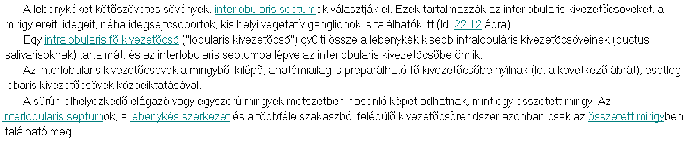
.ismerdfel
-
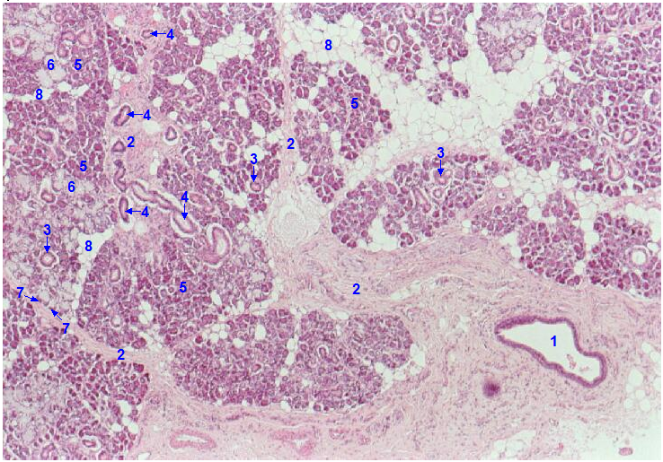
1 ► ductus_excretorius (ductus_interlobularis), TmHh béleli
2 ► septum_interlobulare
3 ► ductus_salivaris (ductus_intralobularis)
4 ► intralobularis fő kivezetőcső vége a septum_interlobulareban, az interlobularis kivezetőcsőbe történő beszájadzás előtt
5 ► serosus végkamracsoport
6 ► mucosus végkamracsoport
7 ► serosus sapka
8 ► zsírsejtek
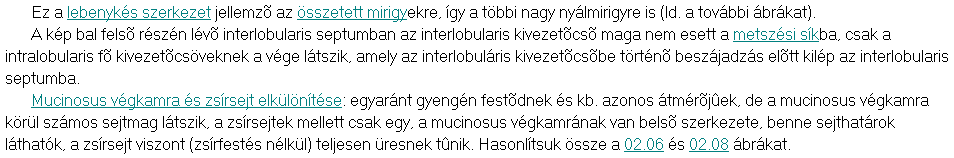
FM – tavalyi jegyzeteim
- zsírsejtek
- mucosus vs serosus mirigy
- Gianuzzi-félhold
- septum_interlobulare
- ductus intercalaris ➜ salivaris ➜ excretorius
- intercalaris ➜ legkisebb (akkora, mint a serosus), de köbhám
- salivaris ➜ 2-3szor nagyobb, 1rHh
- excretorius ➜ 2m/Tm-Kh/Hh
- ductus_intralobularis ➜ intercalaris + salivaris
- ductus_interlobularis ➜ excretorius
- ductus intercalaris vs mucosus ➜ utóbbi sejtmagja lapos
- (nucleus ➜ myoepithel vs mucosus)
| ductus_excretorius | vs | ér |
|---|---|---|
| 2rHh | - | endothelium |
| nincs simaizom körülötte | - | van simaizom körülötte |
.(14) ínszövet - kollagénrostok
.ismerdfel
-
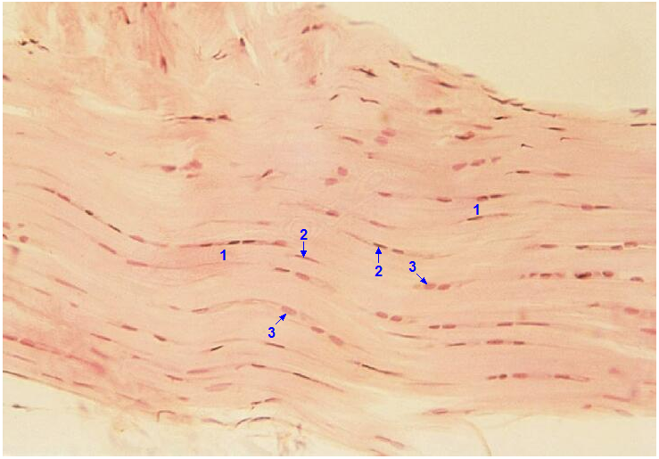
1 ► kollagénrost
2 ► tendocyta sejtmagja
3 ► aktiválódott tendocyta, lazább szerkezetű sejtmag
.ismerdfel
-
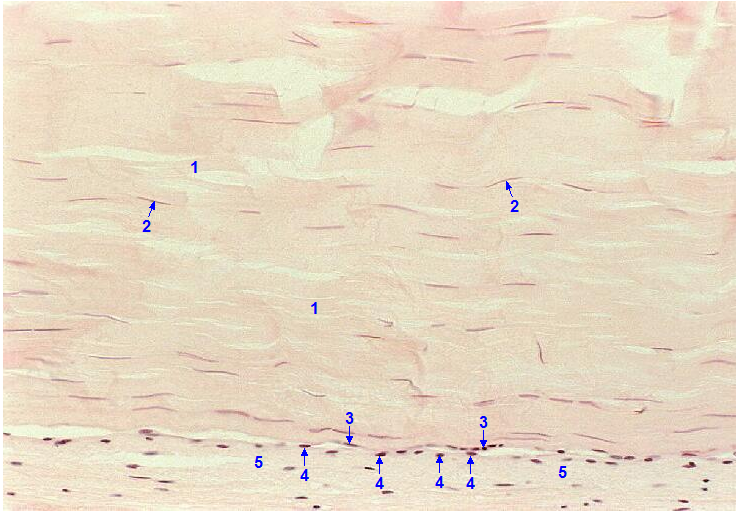
1 ► kollagénrost
2 ► tendocyta sejtmagja
(3) ► synoviális réteg az ín felszínén
(4) ► ínhüvely synoviális sejtjei
(5) ► ínhüvely fibrosus rétegének maradványa
.(15) a.carotis - elasztikus rostok [resorcin-fuchsin]
.ismerdfel
-
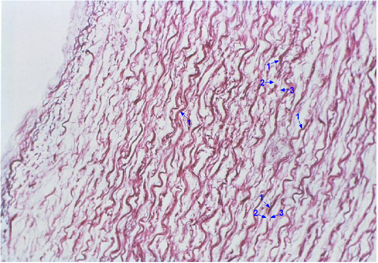
1 ► elasztikus rostok
(2 & 3)
§ ► tunica_adventitia-t ne keressek
.(16) hepar [ezüst-impregnáció]
FM – tavalyi jegyzeteim
- reticularis-rost
- v.centralis ––––––––––––––––––––––––––––––––––––––––––––
- hepatocita
- sinusoid
.ismerdfel
-
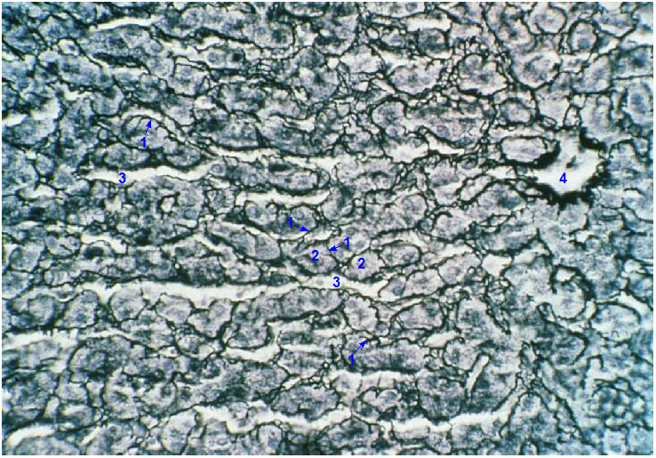
1 ► rácsrostok
2 ► májsejtgerendákba rendeződött májsejtek
3 ► májsinusoid a májsejtgerendák között
4 ► v.centralis
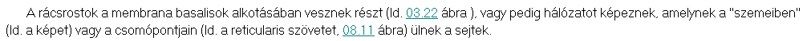
.(17) HAJAS FEJbőr [Azan]
FM
- Hgyk 52.oldal ➜ ezeket keressek
.ismerdfel
-
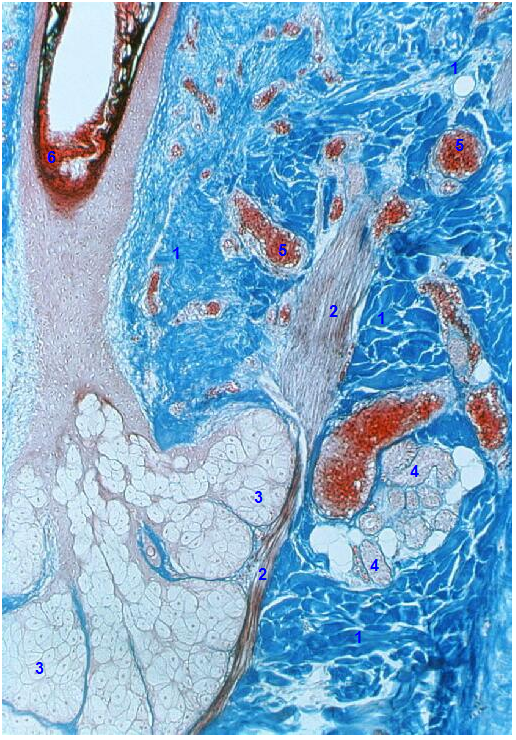
1 ► kollagénrostok
2 ► m.arrector_pili
3 ► faggyúmirigy
4 ► verejtékmirigy (körülötte kék vonal ➜ membrana_basalis ~ reticularis_rostok)
5 ► venula
6 ► szőrtüsző elszarusodott sejtjei
.(18) HAJAS FEJbőr [Hornowsky]
.ismerdfel
-
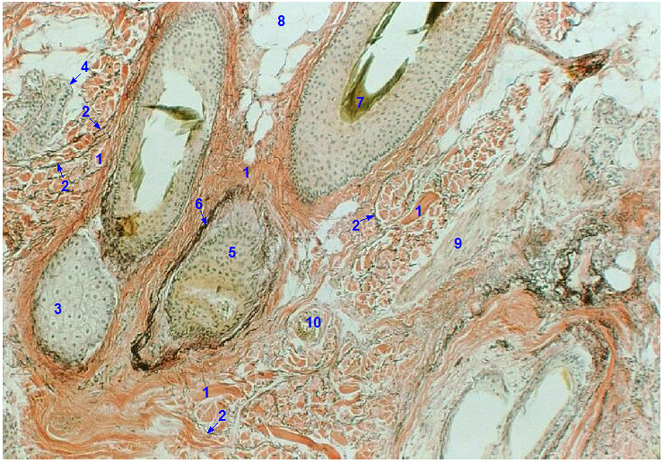
1 ► kollagénrost
2 ► elasztikus-rost
3 ► faggyúmirigy
4 ► verejtékmirigy (körülötte membrana_basalis ~ reticularis_rostok)
5 ► szőrtüsző
6 ► membrana_basalis ~ reticularis_rostok a szőrtüsző körül
7 ► szőrtüsző elszarusodott sejtjei
8 ► zsírsejtek
9 ► m.arrector_pili
10 ► venula
.(19) köldökzsinór - Wharton kocsonya
.ismerdfel
-
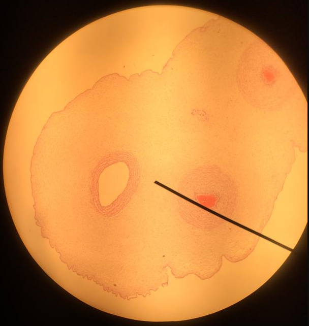
képen mik láthatók? ► 2db a.umbilicalis(muscularisak!) + 1db v.umbilicalis + köztük az allantois maradványa(ez elvileg nem feltétlen lesz rajta)
.ismerdfel
-
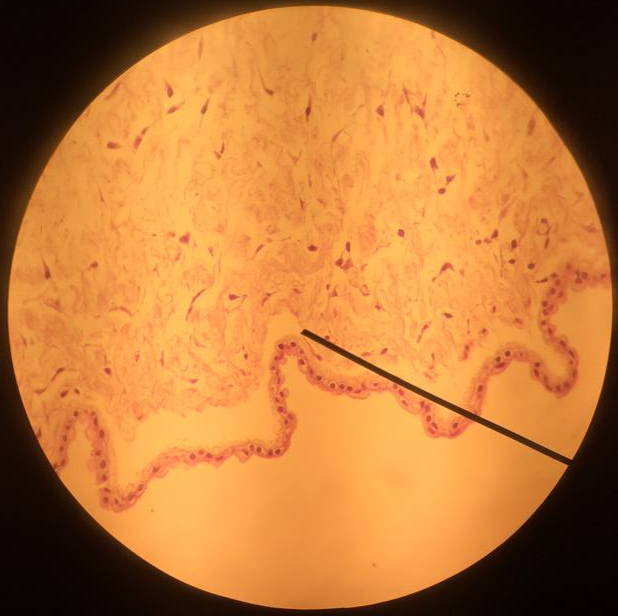
képen mik láthatók? ► amnionhám[1rKh!] + fibroblast
.(20) gyomorfekély - sarjszövet
.ismerdfel
-
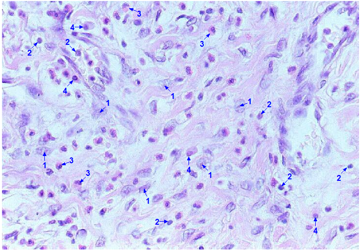
1 ► fibroblast
2 ► lymphocyta
3 ► eosinophil granulocyta
4 ► plazmasejt
.ismerdfel
-
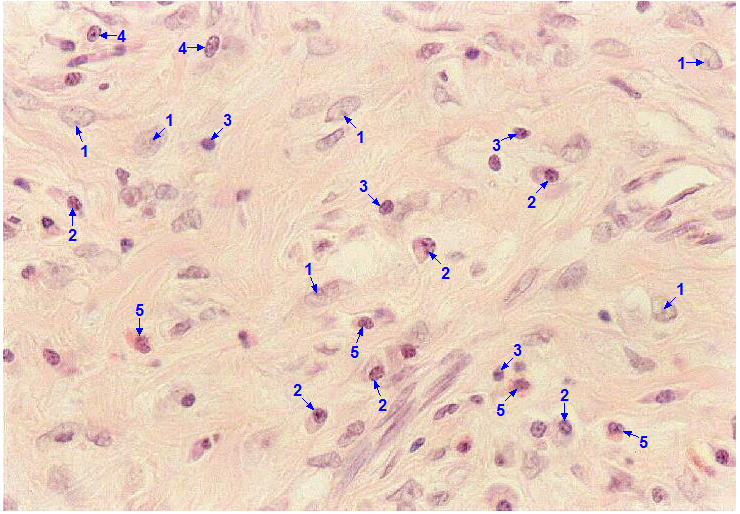
1 ► fibroblast
2 ► plazmasejt
3 ► lymphocyta
4 ► makrofág
5 ► eosinophil_granulocyta
.ismerdfel
-
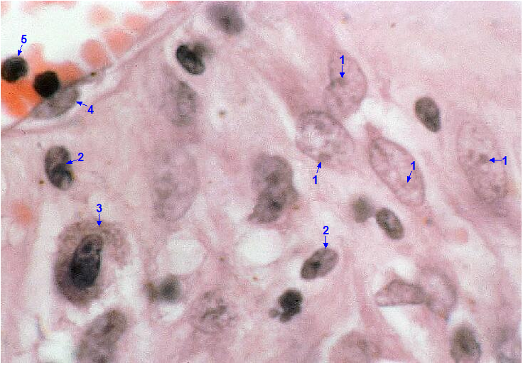
1 ► fibroblast
2 ► makrofág
3 ► makrofág bekebelezés után
4 ► endothel
5 ► lymphocyta
.ismerdfel
-
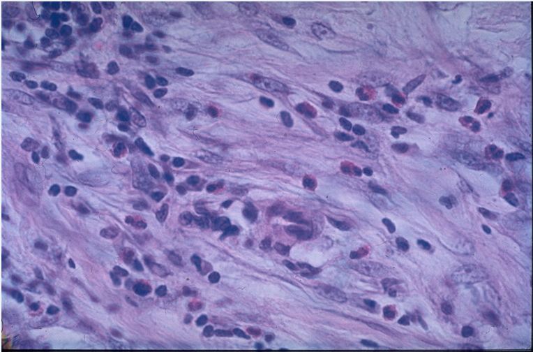
képen mit keressek ► lymphocyta, eosinophil_granulocyta, fibroblast (lehet van egyéb is, de ezek legyenek meg)
.ismerdfel
-
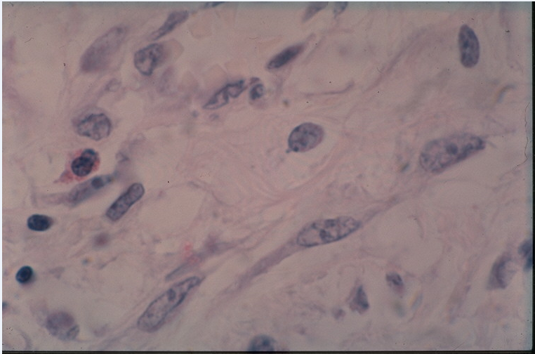
képen mit keressek ► lymphocyta, eosinophil_granulocyta, fibroblast
.ismerdfel
-
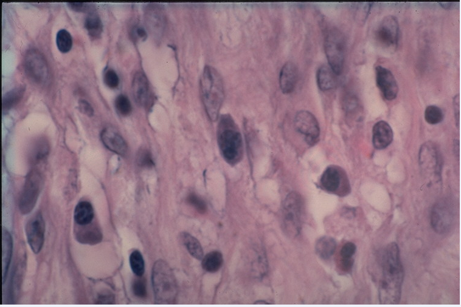
képen mit keressek ► lymphocyta, plazmasejt, fibroblast
.ismerdfel
-
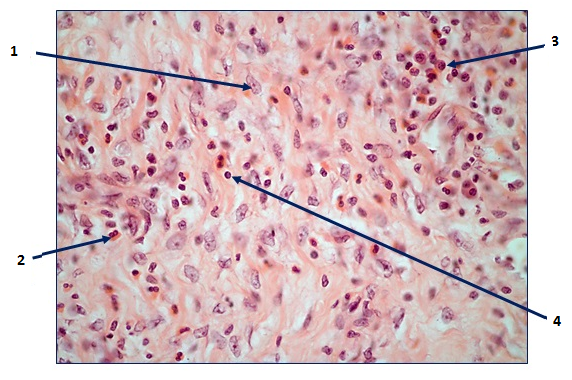
1 ► fibroblast
2 ► eosinophil_granulocyta
3 ► plazmasejt
4 ► lymphocyta
.(21) hashártya - hízósejtek [toulidinkék]
.ismerdfel
-
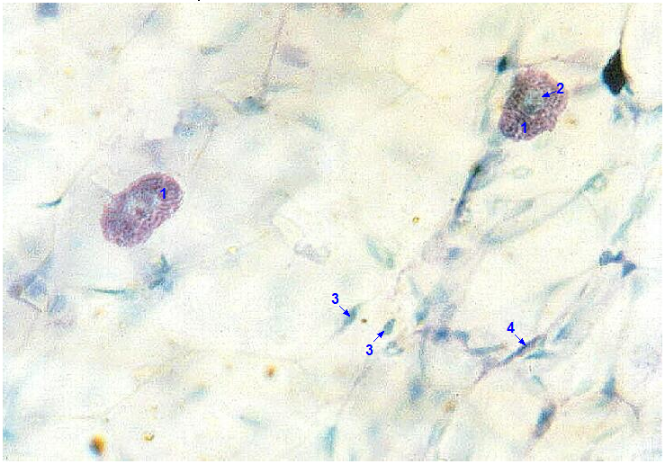
1 ► hízósejt szemcséi
2 ► hízósejt sejtmagja
(3 & 4)
.ismerdfel
-
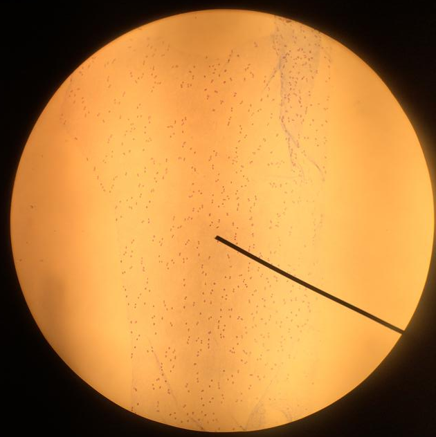
.ismerdfel
-
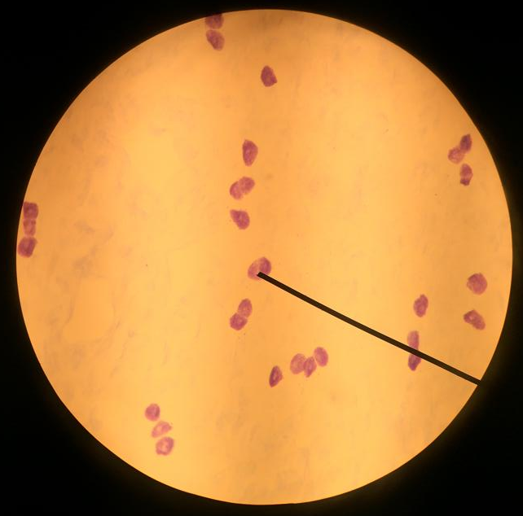
képen mik láthatók? ► szvsz hízósejt sejtmagja a "világosabb" (pl. ahova a nyíl hegye mutat) rész, a többi a szemcsék
.(22) nyelv - zsírszövet [sudan]
.ismerdfel
-
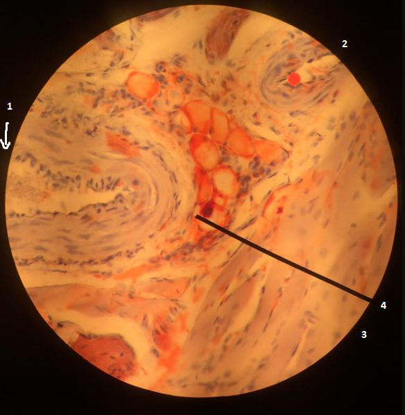
1 ► valamilyen ér keresztmetszete (talán arteriola)
2 ► arteriola keresztmetszete
3 ► harántcsíkolt izom(rostkötegek)
4 ► fehér=sárga zsírszövet
.ismerdfel
-
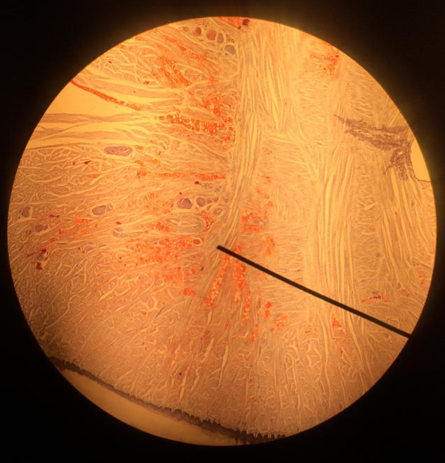
.(23) hyalinporc
.ismerdfel
-
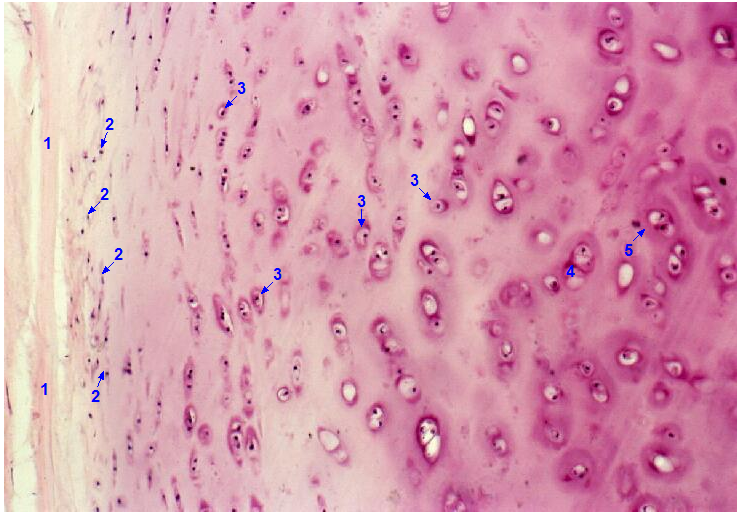
1 ► perichondrium
2 ► chondroblast
3 ► chondrocyta (porcsejt)
4 ► chondron
5 ► porcudvar ➜ basophil-festődésű!
.ismerdfel
-
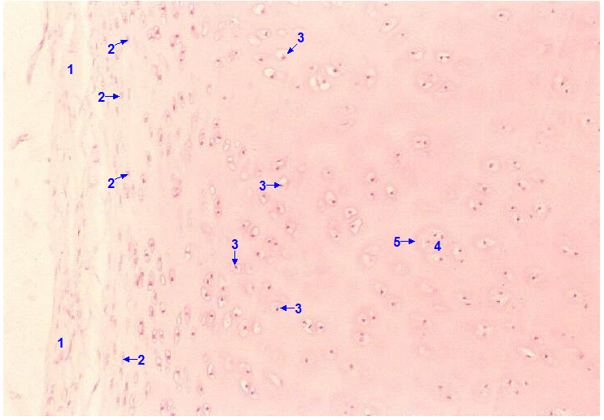
1 ► perichondrium
2 ► chondroblast
3 ► chondrocyta (porcsejt)
4 ► chondron
5 ► porcudvar ➜ basophil-festődésű!
.ismerdfel
-
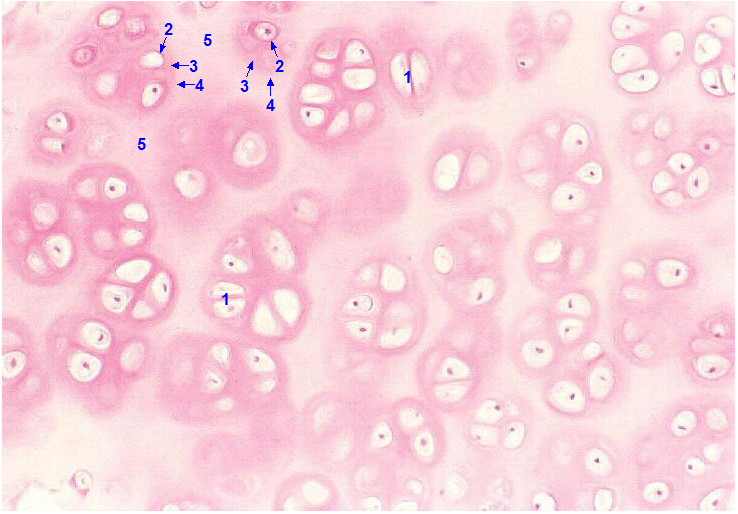
1 ► chondron
2 ► porctok
3-4 ► porcudvar ➜ basophil-festődésű!
5 ► interterritoriális mátrix
.ismerdfel
-
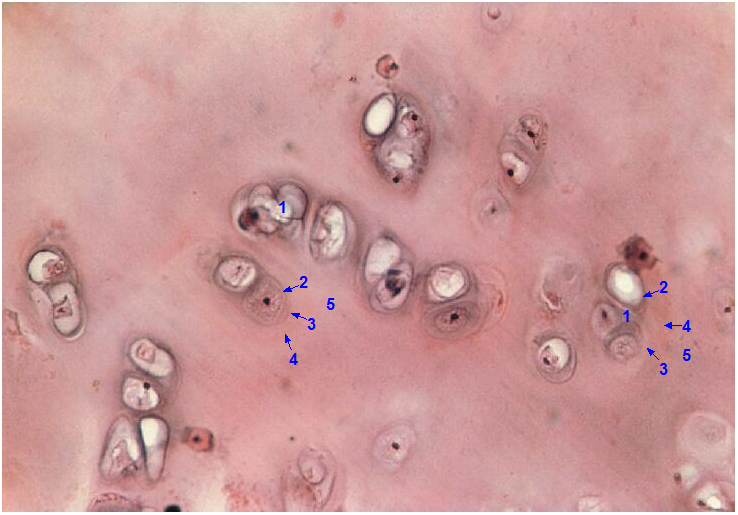
1 ► chondron
2 ► porctok
3-4 ► porcudvar ➜ basophil-festődésű!
5 ► interterritoriális mátrix
.(30) jejunum
.ismerdfel
-
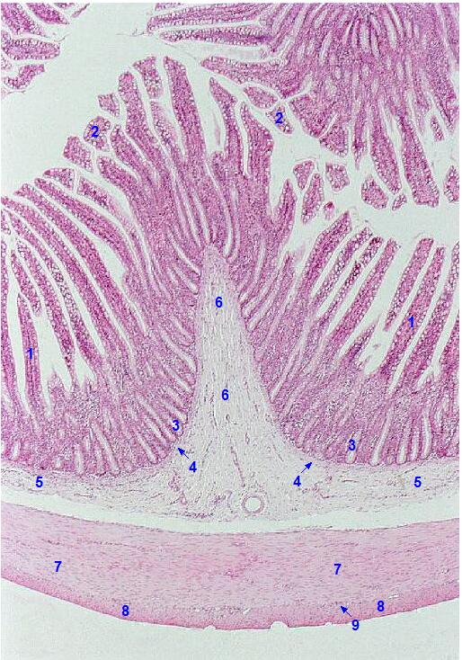
1 ► bélboholy (sok kehelysejt!)
2 ► bélboholy lemetszett vége
3 ► Lieberkühn-kripták a lamina_propria(tunica_mucosa)-ban
4 ► lamina_muscularis(tunica_mucosa)
5 ► tela_submucosa
6 ► Kerkring-redő
7 ► stratum_circulare(tunica_muscularis)
8 ► stratum_longitudinale(tunica_muscularis)
9 ► plexus_myentericus_Auerbachi
ELMÉLET
- 1bélboholy ➜ lamina_propria "kiboltosulása"
- 3Kerkring-redő ➜ tela_submucosa "kiboltosulása"
bélboholy vs Kerkring-redő ➜ mely réteg alkotja?
FM – tavalyi jegyzeteim
- epithelium = 1rHh + kehelysejt
- Lieberkühn-crypták
- plica_circularis-ok (Kerkring-redők) ➜tela_submucosa "kiboltosulása"

- villus_intestinalis-ok = bélbolyhok ➜lamina_propria "kiboltosulása"
- lamina_muscularis
- tela_submucosa
- tunica_muscularis
- stratum_circulare
- plexus_myentericus_Auerbachi
- stratum_longitudinale
- tela_subserosa & tunica_serosa
.(44) nyirokcsomó
FM – tavalyi jegyzeteim
- ▉ capsula (tömött_rostos_kötőszövet)
- ▉ sinusok ➜ marginális / intermedier / medullaris
- ▉ cortex medulla
- ▉ medulla ➜ reticulumsejt
- ▉ medulla ➜ erek / reticulumsejt / plazmasejt / velőköteg / velősinus
- ▉ medullában a trabecula ✽ 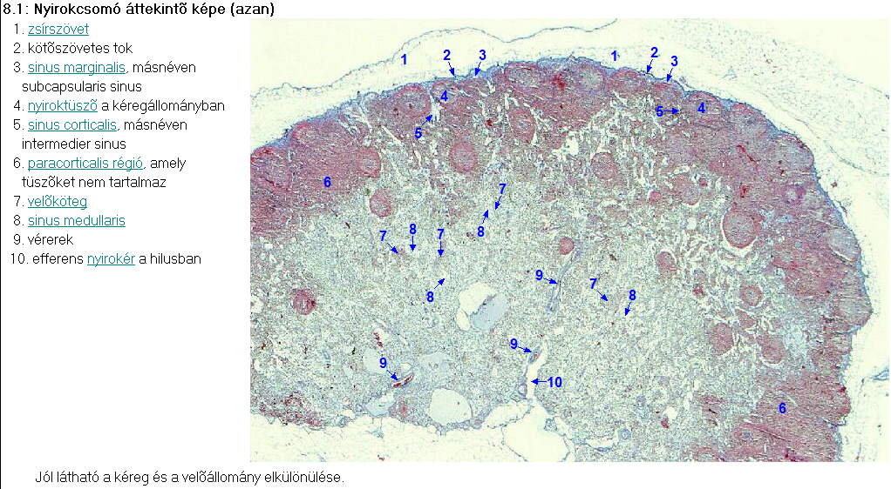

.ismerdfel
-
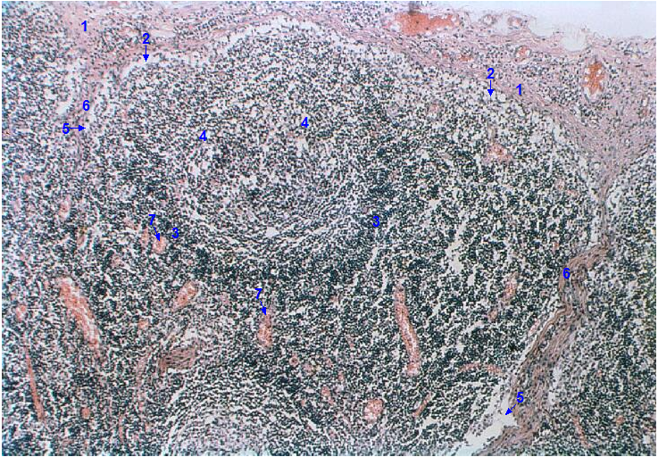
1 ► capsula
2 ► sinus_marginalis
3 ► sapka (folliculus része)
4 ► centrum_germinativum
5 ► sinus_corticalis
6 ► trabecula
7 ► HEV
.ismerdfel
-
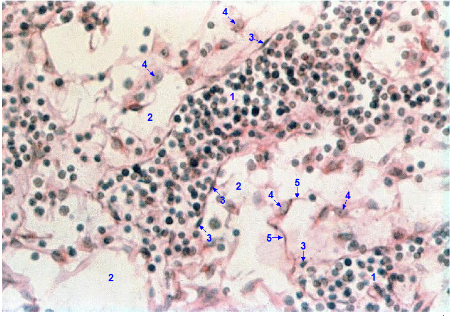
1 ► velőköteg
2 ► sinus_medullaris
3 ► sinusendothel-sejt (= lelapult reticulumsejt)
4 ► reticulumsejt
5 ► reticularis-rost
.(45) lien
FM – tavalyi jegyzeteim
- ▉ Malpighi_folliculus vs PALS
- ▉ capsula + trabecula
- ▉ sinusok + Billroth-pulpakötegek
- ▉ venula
- ▉ a.trabecularis + a.penicillaris
- ▉ reticulumsejt
- ▉ orsóér
- ▉ Schweigger-Seidel limphatikus hüvely

.ismerdfel
-
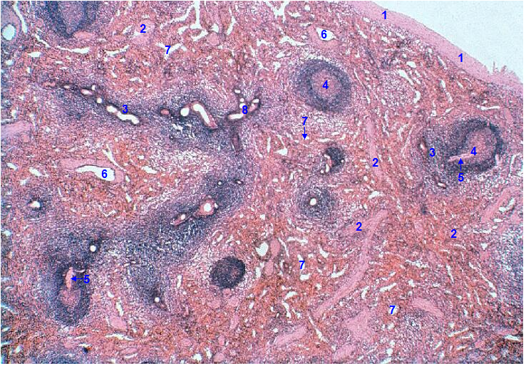
1 ► capsula
2 ► trabecula
3 ► a.centralis + PALS
4 ► Malpighi-folliculus
5 ► arteriola_centralis (mellette lévő (3)a.centralisból ágazott le)
6 ► (kis) v.trabecularis
7 ► sinusoidok
(8) ► aa.penicilliformes elágazódásai
.(46) mosott lép
FM – tavalyi jegyzeteim
- ▉ PALS & Malpighi-folliculus
- ▉ trabecula
- ▉ capsula
- ▉ venula
- ▉ rácsrost
- ▉ sinus
- ▉ reticulumsejt
- ▉ orsóér
- ▉ Schweigger-Seidel limphatikus hüvely
.ismerdfel
-
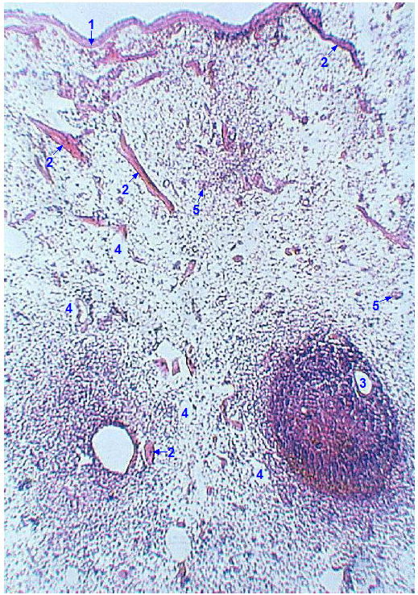
1 ► capsula
2 ► trabecula
3 ► a.centralis (Malpighi-tüszőn)
4 ► sinusoid
5 ► orsóér
.ismerdfel
-
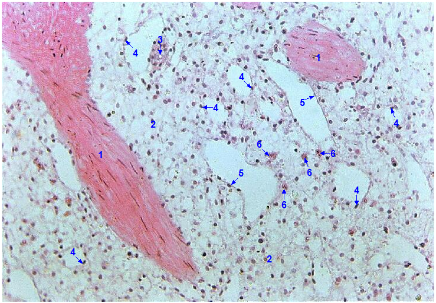
1 ► trabecula
2 ► lymphoreticularis ktsz = reticulumsejtek + rácsrostok
3 ► orsóér
4 ► sinusoid, nyílnák dongasejtek
5 ► sinusoid folytatódása pulpavénába (nyílnál már venula a falszerkezet)
6 ► makrofág
.ismerdfel
-
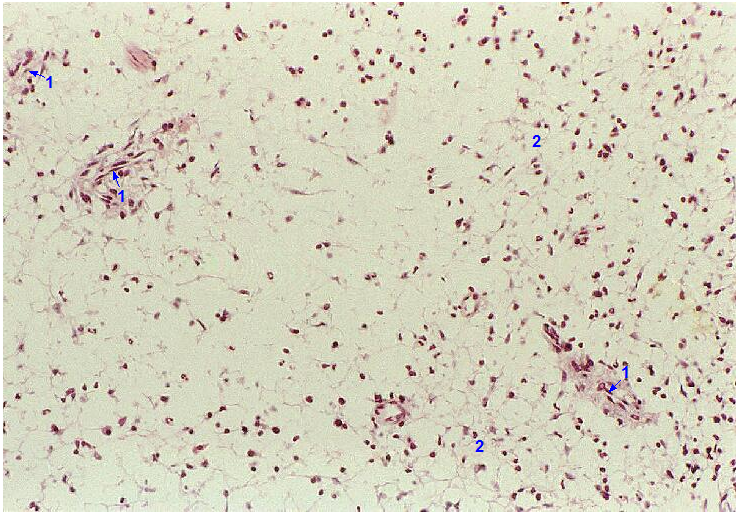
1 ► orsóér
2 ► lymphoreticularis ktsz = reticulumsejtek + rácsrostok
.(47) tonsilla_palatina
FM – tavalyi jegyzeteim
- ▉ crypta
- ▉ TENSLH ➜ lymphatikus infiltráció
- ▉ TENSLH alatt lymphoreticularis-szövet
- ▉ szekunder_folliculus
- ▉ van kötőszöveti tok, mely elválasztja az alatta lévő képletektől (harántcsíkolt izom stb.) /fő megkülönböztetése/
- ▉ harántcsíkolt 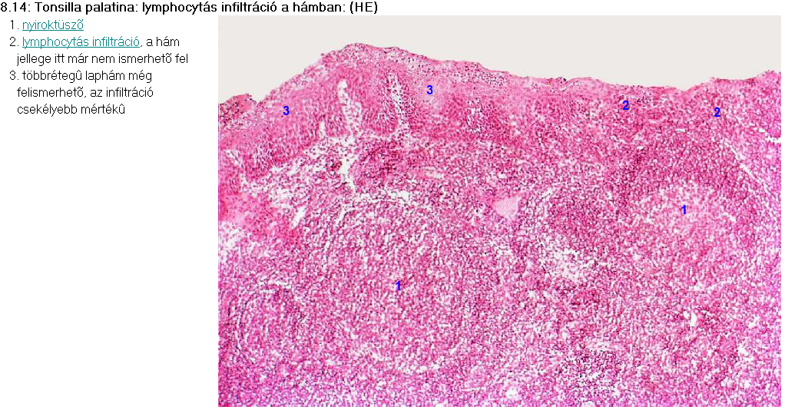
.ismerdfel
-
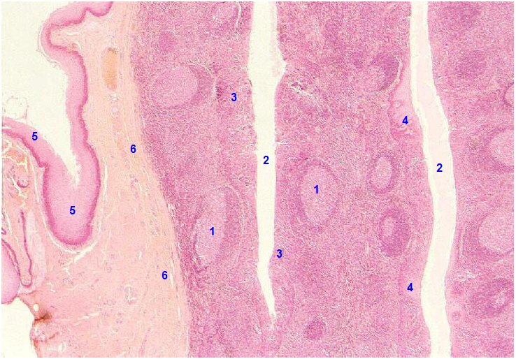
1 ► folliculus
2 ► crypta (a felszín mély behúzódása hámmal bélelve)
3 ► lymphocytás infiltráció, a hám jellegge már nem ismerhető fel
4 ► TrEnsLh
5 ► TrEnsLh
6 ► ktsz
T-sejt & B-sejt hol? ► B-sejt a folliculusban, T-sejt az interfollicularis állományban
.(48) tonsilla_lingualis
FM – tavalyi jegyzeteim
- ▉ crypta
- ▉ TENSLH ➜ lymphatikus infiltráció
- ▉ TENSLH alatt lymphoreticularis-szövet
- ▉ szekunder_folliculus
- ▉ glandulae_linguales ➜ mucosus-típusa /fő megkülönböztetése/
- ▉ harántcsíkolt izom + zsírsejtek
.ismerdfel
-
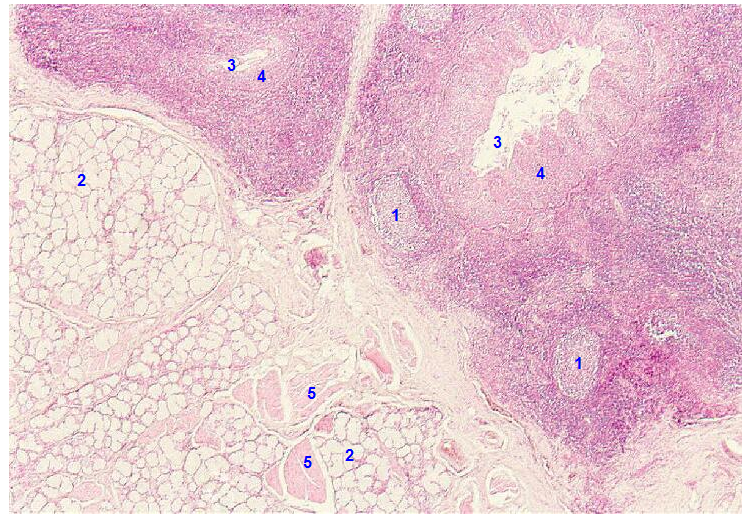
1 ► folliculus
2 ► glandulae_linguales - mucosus!
3 ► mirigykivezetőcső
4 ► TrEnsLh lymphocytás infiltrációja
5 ► harántcsíkolt izom
(ktsz is van a képen)
.(49) thymus
FM – tavalyi jegyzeteim
- ▉ lobulus
- cortex
- medulla
- ▉ Hassal-test
- ▉ septum_interlobulare, lehet h hianyzik
- ▉ capsula 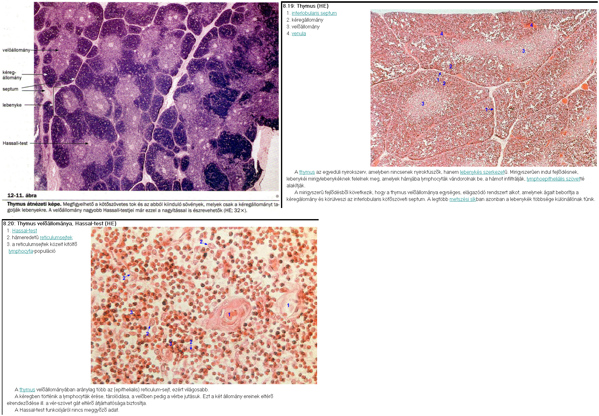
.ismerdfel
-
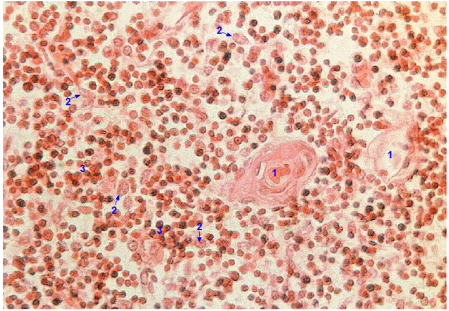
1 ► Hassal-test
2 ► reticulumsejt (epithelialis)
3 ► lymphocyták
.ismerdfel
-
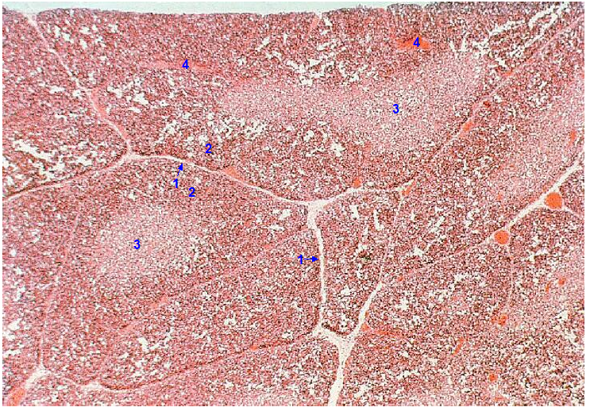
1 ► septum_interlobulare
2 ► cortex
3 ► medulla
4 ► venula
.(50) elasztikus artéria
FM – tavalyi jegyzeteim
- tunica_intima
- endothelium
- stratum_subendotheliale
- tunica_media = ellasztikus rostok + simaizomsejtek
- tunica_adventitia
- elasztikus vs musculáris arteria ➜ musculárist az elasztikus-artériától úgy különböztetem meg, hogy membrana_elastica_interna-t megkeresem tunica_intima és tunica_media határán (ugyanis elasztikusban nincs)
.ismerdfel
- tunica_intimát melyek alkotják? ► 1+2
1 ► endothelsejt (magja)
2 ► stratum_subendotheliale
3 ► tunica_media – ellasztikus rostok
4 ► simaizomsejt (magja)
megjegyzések
§ tunica_adventitia nem látható
.(51) muszkuláris artéria & véna
FM – tavalyi jegyzeteim
- kettő megkülönböztetése: artériánál a membrana_elastica_interna és externát keressem meg (nehéz kivenni, de mindig kilehet) (illetve fala elvileg vastagabb) § ☯
- simaizomsejtek
- vasa_vasorum ➜ adventitiaban található erek, melyek azt táplálják
- tunica_intima
- endothelium
- stratum_subendotheliale
- membrana_elastica_interna ➜ 1réteg fenesztrált ellaszikus-membrán
- tunica_media
- membrana_elastica_externa
- tunica_adventitia
- artéria és véna közti különbségek elméletben
- véna lumene ovális
- véna mediaja vékonyabb
- véna adventitiaja vastagabb
.ismerdfel
1 ► artéria lumene
2 ► véna lumene
3 ► membrana_elastica_interna
4 ► membrana_elastica_externa
5 ► tunica_media - simaizomsejt (magja)
6 ► stratum_subendotheliale
7 ► endothelsejtek (magja)
8 ► tunica_adventitia
(9) ► műtermék,gyűrődés
.(52) vér alakos elemei [Pappenheim]
.ismerdfel
1-2 ► neutrophil granulocyta
3-5 ► eosinophil granulocyta
6-7 ► basophil granulocyta
.ismerdfel
1 ► neutrophil_granulocyta
2 ► neutrophil_granulocyta
3 ► neutrophil_granulocyta
4 ► monocyta
5 ► kis lymphocyta
6 ► eosinophil_granulocyta
7 ► thrombocyták
.ismerdfel
1 ► neutrophil_granulocyta
2 ► neutrophil_granulocyta
3 ► eosinophil_granulocyta
4 ► monocyta
5 ► nagy lymphocyta
6 ► kis lymphocyta
.ismerdfel
1 ► neutrophil_granulocyta
2 ► neutrophil_granulocyta
3 ► basophil_granulocyta
4 ► kis lymphocyta
5 ► nagy lymphocyta
.(53) ajak
FM – tavalyi jegyzeteim
- rubor_labii
- glandulae_labiales - seromucosus
- TENSLH - mucosa vs TESLH - cutis
- m.orbicularis_oris
- szőrtüsző
- faggyúmirigy
- szőrmerevítő izom
.ismerdfel
1 ► harántcsíkolt_izom [m.orbicularis_oris] ()
2 ► TENSLH
3 ► seromucosus nyálmirigy [glandula_labialis]
4 ► rubor_labii (ktsz papillákkal)
5 ► pars_cutanea TESLH
6 ► szőrtüsző mélyebb része
7 ► faggyúmirigy
8 ► faggyúmirigy szőrtüsző nélkül
9 ► csövekényes szőrtüsző faggyúmirigyekkel
rubor_labii
1 ► ktsz papilla
2 ► gyenge elszarusodás
mi nincsen ezen a tájékon? ► szőrtüsző & mirigy
.(54-56) nyelv
FM – tavalyi jegyzeteim
- ktsz papilla ()
- papilla filiformis/fungiformis/vallata (vallata sokkal nagyobb, mint a másik kettő)
- ízlelőbimbók ➜ ne keverjem össze () ktsz papillával
- zsírsejtek
- harántcsíkolt izom
- glandulae_linguales
- serosus (Ebner-mirigy)
- mucosus
- tunica_mucosa
- epithelium TESNLH
- lamina_propria
- Nincs tela_submucosa, helyette aponeurosis linguae-hez rögzül
- (innentől szvsz a folytatása is más) --------------------
- (venula)
papillae_filiformes & papilla_fungiformis
1 ► papilla_filiformis
2 ► papilla_fungiformis
3 ► ktsz papilla
4 ► ízlelőbimbó
milyen hám borítja ► TrEnsLh (de a papillák felszínén némi szarusodás megfigyelhető)
papillae_filiformes & papilla_fungiformis
1 ► papilla_filiformis
2 ► papilla_fungiformis
papilla_vallata
1 ► árok (papillák kétoldalán 1-1)
2 ► nyelv nyálkahártyájának az árkok közé nyúló része
3 ► ízlelőbimbók a papilla oldalán
4 ► serosus kis nyálmirigyek (Ebner-mirigy)
5 ► 4 kivezeőcsöve ➜ árok aljába nyílik
6 ► idegrostok a papilla belsejében §
7 ► harántcsíkolt izom
papilla_vallata
1 ► papilla_vallata
2 ► ktsz papilla
3 ► árok (papillák kétoldalán 1-1)
4 ► serosus kis nyálmirigyek (Ebner-mirigy)
5 ► 4 kivezeőcsöve ➜ árok aljába nyílik
.(58) glandula_parotis
FM – tavalyi jegyzeteim
- serosus mirigy
- zsírsejtek
- septum_interlobulare
- ductus intercalaris/salivaris/excretorius
§ ductus_intercalaris ezen található legkönyebben (K&P írta)
.ismerdfel
1 ► serosus végkamra
2 ► ductus_intercalaris
3 ► ductus_salivaris
4 ► zsírsejtek
.ismerdfel
1 ► zsírsejt
2 ► zsírsejt
3 ► intralobularis_kivezetőcső
4 ► interlobularis_kivezetőcső
5 ► septum_interlobulare
.(59) glandula_sublingualis
FM – tavalyi jegyzeteim
- Gianuzzi-félhold
- mucosus & serosus mirigy
- septum_interlobulare
- ductus salivaris/excretorius ... intercalaris alig
(mucosus végkamra, ductus_intercalaris, ductus_salivaris)
1 ► mucosus_végkamra (nyíl a lumenre mutat)
2 ► serosus_sapka
3 ► ductus_intercalaris
4 ► ductus_salivaris ➜ mi nyílik ebbe?
(5) ► sejtmag a ductus_salivarisban a basalis csíkolat miatt felfelé eltolódva
(6) ► mucosus_sejt magja
(7) ► myoepithel_sejt magja
(intralobuláris kivezetőcsőrendszer)
1 ► seromucosus végkamra ()
2 ► ductus_intercalaris
3 ► ductus_salivaris
4 ► mucosus_végkamra
5 ► serosus_sapka
6 ► serosus_végkamra
(7) ► mucosus_sejt magja
(8) ► myoepithel_sejt magja (végkamrához hogy illeszkedik?)
(9) ► sejtmag a ductus_salivarisban a basalis csíkolat miatt felfelé eltolódva
10 ► intralobularis fő kivezetőcső ➜ mi nyílik ebbe? ()
.ismerdfel
1 ► mucosus_végkamra ()
2 ► serosus_sapka
3 ► ductus_salivaris
4 ► serosus_végkamra
5 ► septum_interlobulare
J interlobularis vs intralobularis kivetezőcső & ktsz_stroma
.(60) glandula_submandibularis [mucicarmin]
[mucicarmin]
1 ► mucosus végkamracsoport
2 ► serosus végkamracsoport
3 ► intralobularis kivezetőcső, ductus salivaris
4 ► zsírsejtek
5 ► septum_interlobulare
6 ► interlobularis kivezetőcső, ductus excretorius
§ ► mucicarmin festés a mucint pirosra festi
FM – tavalyi jegyzeteim
- Gianuzzi-félhold
- mucosus & serosus mirigy
- septum_interlobulare
- zsírsejtek
- ductus intercalaris/salivaris/excretorius
.(61) oesophagus-cardia átmenet
.ismerdfel
1 ► TrEnsLh
2 ► 1rHh
3 ► glandulae_cardiacae (Schaffer-mirigyek) (lamina_propriában) ➜ foveolae_gastricae-kba nyílnak
4 ► lamina_propria(tunica_mucosa)
5 ► lamina_muscularis(tunica_mucosa)
6 ► tela_submucosa
.(62) fundus_ventriculi
fundus egy redője (ruga_gastrica)
1 ► tunica_muscularis
2 ► tela_submucosa
3 ► tela_submucosa (benyomulása 1 redőbe)
4 ► lamina_muscularis(tunica_mucosa)
5 ► lamina_propria(tunica_mucosa) ➜ mirigyekkel kitöltve
6 ► foveola_gastrica
7 ► foveola_gastrica
8 ► 1rHh
.ismerdfel
1 ► 1rHh + foveola_gastrica
2 ► fedősejtek(fundusmirigy)
3 ► fősejtek(fundusmirigy)
(4) ► nyirokér
(5) ► fibrinoid csík
6 ► lamina_muscularis(tunica_mucosa) ()
7 ► lamina_muscularis(tunica_mucosa) ()
§
FM – tavalyi jegyzeteim
- fundusmirigy ➜ fedősejtek + fősejtek
- foveolae_gastricae
- tunica_mucosa
- epithelium 1rHh
- lamina_propria
- lamina_muscularis
- tela_submucosa
- tunica_muscularis
- fibrae_obliquae
- str.circulare
- str.longitudinale
- tela_serosa & tunica_serosa
- (plica_gastrica)
.(63) fundus_ventriculi [PAS-Congo-H]
ismerdfel [PAS-Congo-H]
1 ► 1rHh + foveola_gastrica
(2) ► fedősejt
(3) ► melléksejt
4 ► fősejtek
(5) ► fibrinoid-csík
6 ► lamina_muscularis(tunica_mucosa)
ismerdfel [PAS-Congo-H]
1 ► 1rHh (apikális részükben nyák)
(2) ► fundusmirigy lumene
3 ► fedősejt
4 ► melléksejt
5 ► fősejt
(6)
7 ► fibrocyta (lamina_propria ktsz-ében)
ismerdfel [PAS-Congo-H]
1 ► fundusmirigy lumene
2 ► fedősejt
3 ► melléksejt
4 ► fősejt
5 ► fibrocyta (lamina_propria ktsz-ében)
FM – tavalyi jegyzeteim
- itt vannak a fundusmirigy-ben melléksejtek is (62-essel szemben a különbség)
.(64) pylorus-duodenum átmenet
.ismerdfel
1 ► m.sphyncter_pylori - stratum_circulare(tunica_muscularis) megvastagodása
2 ► tela_submucosa
3 ► lamina_muscularis(tunica_mucosa)
4 ► glandulae_pyloricae(=) (lamina_propriaban)
(5) ► nyirokér
6 ► foveola_gastrica
7 ► bélboholy
8 ► Brunner-mirigy (tela_submucosaban!)
9 ► solitaer nyiroktüsző
10 ► ruga_gastrica(=gyomornyálkahártya redő)
.ismerdfel
1 ► foveola_gastrica (& 1rHh)
2 ► glandulae_pyloricae(=) (lamina_propriaban)
(3) ► nyirokér
4 + 5 ► lamina_muscularis (tunica_mucosa) ()
6 ► tela_submucosa
7 ► tunica_muscularis
FM – tavalyi jegyzeteim
- ezeket feltétlen keressek!
- solitaer folliculus
- m.sphincter_pylori
- epithelium 1rHh
- pylorusmirigyek(lamina_propria) ➜➜ Brunner-mirigy(tela_submucosa)
- foveolae_gastricae ➜➜ vilus_intestinalis
- (glandulae_pyloricae)
.(65) duodenum
.ismerdfel
1 ► bélboholy
2 ► kehelysejt
3 ► Lieberkühn-kripta
4 ► lamina_muscularis(tunica_mucosa)
5 ► Brünner-mirigy a tela_submucosaban
6 ►
.ismerdfel
1 ► Lieberkühn-kripta (lamina_propria-ban)
2 ► kehelysejt
3 ► lamina_muscularis(tunica_mucosa)
4 ► Brünner-mirigy nyílása a 1-be
FM – tavalyi jegyzeteim
- Brunner-mirigy ➜ ezzel különíthető el jejunum/ileumtól!!!
- tela_submucosat tölti ki
- pseuodomucosus
- kehelysejtekből kevesebb van, mint jejunumnál
- többi megegyezik jejunum-mal
.(66) ileum
.ismerdfel
1 ► bélboholy
2 ► Lieberkühn-kripta (falában kehelysejtek)
3 ► lamina_muscularis (tunica_mucosae)
4 ► folliculi_lymphatici_aggregati (nyiroktüszők) = Peyer-Plaque ➜ tela_submucosaban
5 ► lymphocytás infiltráció által kúp alakúvá formált boholy
6 ► stratum_circulare (tunica_muscularis)
7 ► stratum_longitudinale (tunica_muscularis)
8 ► plexus_myentericus_Auerbachi
FM – tavalyi jegyzeteim
- folliculi_lymphatici_aggregati = Peyer-Plaque ➜tela_submucosaban
- kehelysejtekből több van, mint jejunum
- többi megegyezik jejunum-mal
.(67) appendix_vermiformis
.ismerdfel
1 ► Lieberkühn-kripták, falukban kehelysejtek
2 ► nyiroktüsző
3 ► tunica_muscularis
FM – tavalyi jegyzeteim
- folliculi_lymphatici_aggregati ➜ tela_submucosa-ban, és átlóg lamina_propriaba
- Lieberkühn-crypták
- tunica_mucosa
- epithelium = 1rHh + kehelysejt
- (lamina_propria & lamina_muscularis)
- tela_submucosa
- tunica_muscularis
- str.circulare
- str.longitudinale
- tela_subserosa & tunica_serosa
- nincsenek vilus_intestinalisok & plica_circularisok
.(68) hepar [azan] (sertés)
FM – tavalyi jegyzeteim
- v.sublobularis
- Glisson-triász
- a.interlobularis
- v.interlobularis
- ductus_interlobularis
- septum_interlobulare --------------------
- (Hering-csatorna)
(májlebenyke "hosszmetszete")
1 ► v.centralis
2 ► v.sublobularis
3 ► májsejtgerendák, közöttük májsinusoid
4 ► interlobularis_septum
5 ► v.interlobularis
6 ► a.interlobularis
7 ► ductus_interlobularis (epeút)
portális triász
1 ► v.interlobularis
2 ► a.interlobularis
3 ► ductus_interlobularis (epeút) ➜ fala rosszul fixálódott
4 ► nyirokér
5 ► a.circumlobularis leágazása
6 ► májlebenyke hepatocytákból álló külső lemeze
7 ► interlobularis_septum
(lebenykés szerkezete)
1 ► v.centralis (néha – mint itt is – kettő is lehet egy lobulusban)
2 ► septum_interlobulare
3 ► v.intelobularis
4 ► a.interlobularis
5 ► ductus_interlobularis (epeút)
6 ► májlebenyke hepatocytákból álló külső lemeze
7 ► májsinusoidok, a májsejtgerendák között
.(69) hepar
FM – tavalyi jegyzeteim
- hepatocitak
- májsinusoidok
- Glisson triász
- septum_interlobulare --------------------
- fenesztralt_endothel
- Hering-csatorna
(májlebenyke sejtjei)
1 ► májsejtgerendákba rendeződött májsejtek (nyíl a magra mutat), közöttük vannak a májsinusoidok
2 ► májsinusoid falát alkotó endothelszerű sejtek
3 ► Kuppfer-sejtek a májsinusoidokban
4 ► Ito-sejtek
5 ► lymphocyta
(májlebenyke sejtjei)
1 ► májsejtgerendákba rendeződött májsejtek (nyíl a magra mutat), közöttük vannak a májsinusoidok
2 ► Kupffer-sejtek a májsinusoidokban
(3) ► fagocitózis nyomai, hemosiderin szemcsék
4 ► májsinusoid faláta alkotó endothelszerű sejtek ()
5 ► Ito-sejtek
6 ► neutrophil granulocyta
§ §portális triász és Hering-csatornák
1 ► v.interlobularis
2 ► a.interlobularis
3 ► ductus_interlobularis (epeút)
4 ► Hering-csatorna
5 ► Hering-csatorna kilépése a májlebenykéből
6 ► májsejtgerendák, közöttük 7ek
7 ► májsinusoidok, közöttük 6ok
(8) ► érbelépés, májsinusoid kialakulása a májlebenyke szélén
9 ► májlebenyke hepatocytákból álló külső lemeze
Hering-csatornák funkciója? ► összeköttetést teremtenek az epekapillárisok és a ductus_interlobularisok között
portális triász
1 ► v.interlobularis
2 ► a.interlobularis
3 ► ductus_interlobularis (epeút)
(4) ► véralvadék maradványa
5 ► májsinusoid a májsejtgerendák között
6 ► májlebenyke hepatocytákból álló külső lemeze
.(70) pancreas
FM – tavalyi jegyzeteim
- ▉ Vater-pacini testecske
- ▉ Langerhans-sziget
- ▉ serosus-mirgyek
- ▉ ductus excretorius/intercalaris /salivaris nincs!/
- ▉ septum_interlobulare
- ▉ centroaciner-sejt
- ▉ v.sublobularis
- ▉ intramuralis_ganglion (füzet) vs Langerhans-sziget
.ismerdfel
1 ► serosus végkamra
2 ► Langerhans-sziget
3 ► ductus_interlobularis
4 ► ductus_intralobularis beszájadzása ➜ de ez nem ductus_salivaris, hanem ductus_intervalaris
5 ► ductus_intralobularis kivezetőcső(4) mélyebb szakasza
6 ► septum_interlobulare
.ismerdfel
1 ► serosus sejt magja
2 ► centroaciner sejt magja
3 ► zimogén szemcsék miatt a serosus kamra lumen körüli része (sejtek apikális része) eosinophil festődésű
.(71) larynx
.ismerdfel
1 ► cartilago_thyroidea
2 ► cartilago_cricoidea
3 ► os_hyoideum, benne vörös csontvelő
4 ► epiglottis (benne nyálmirigyek)
5 ► plica_vestibularis, alatta ventriculu_laryngis bemenet
6 ► plica_vocalis
(7) ► radix_lingua részlete: izom + nyiroktüsző
8 ► cartilago_tracheale
(9) ► kis nyálmirigy kivezetőcsöve
(10) ► solitear nyiroktüsző(=folliculus)
11 ► m.sternothyroideus, nyíl a linea_obliqua-ra mutat
12 ► m.thyrohyoideus
(13) ► m.sternohyoideus & m.omohyoideus
14 ► m.cricothyroideus
15 ► m.thyroarytenoideus és (alatta) m.cricothyroideus_lateralis
16 ► m.vocalis
.(72) trachea
FM – tavalyi jegyzeteim
- mirigyek a főként paries_membranaceus tájékán
.ismerdfel
1 ► TmK-Hh (benne kehelysejtek is)
2 ► glandula_trachealis (seromucosus)
(3) ► mirigykivezetőcső nyílása
4 ► lamina_propria (nyíl a réteg alsó szélén lévő fibroelasticus membránra mutat)
5 ► tela_submucosa
6 ► perichondrium=porchártya
7 ► chondroblastok [hyalinporc]
8 ► chondrociták=porcsejtek [hyalinporc]
§
.(73) pulmo
FM – tavalyi jegyzeteim
- mesothelium-ot keressek a szélén (pleura)
- pneumocyta_II ➜ ne keressem őket, mert elvileg alig lehet őket kivenni (márha egyáltalán kilehet)
- ▉ bronchus
- ▉ bronchiolus
- ▉ ductus_alveolaris
- ▉ alveolus
- ▉ simaizomsejt
- ▉ hyalinporc
- ▉ seromucosus mirigy
- ▉ a.pulmonalis ága
.ismerdfel

1 ► hyalinporc
2 ► [bronchus] epithelium ➜ Tm-Kc-Hh (+kehelysejt)
3 ► [bronchiolus] epithelium ➜ Tm-Kc-Hh
4 ► tunica_muscularis - simaizom
5 ► serosus mirigy
6 ► artéria
7 ► (véna)
(8) ► ideg (nyílnál vegetatív ganglionsejt)
9 ► zsírsejt
10 ► alveolus
.ismerdfel
1 ► perichondrium
2 ► [bronchus] epithelium: Tm-Kc-Hh + kehelysejt
3 & 4 ► [bronchiolus] epithelium: Tm/1r-Kc-Hh
5 ► tunica_muscularis - simaizom
6 ► serosus mirigy
7 ► ductus_alveolaris
8 ► alveolus
.ismerdfel
1 ► [bronchiolus_terminalis] epithelium: 1r-Hh
2 ► [bronchiolus_terminalis] epithelium: 1r-Kh
3 ► alveolus
4 ► ductus_alveolaris
5 ► simaizom - tunica_muscularis
6 ► a.pulmonalis egy ága: endothelium
.ismerdfel
1 ► ductus_alveolaris
2 ► alveolus
3 ► alveolus sphincter (simaizom + elasztikus rostok)
(4) ► alveolus, nyílása nem esett a metszés síkjába
(5) ► makrofág fagocitózis után
6 ► artéria
.ismerdfel
1 ► ductus_alveolaris
2 ► alveolus
3 ► alveolus sphincter (simaizom + elasztikus-rostok)
(4) ► alveolus, nyílása nem esett a metszés síkjába
(5) ► koromlerakódás
.ismerdfel
1 ► [bronchiolus_terminalis] vége
2 ► [bronchiolus_respiratorius] 1r-Kh
3 ► ductus_alveolaris
4 ► alveolus
(5) ► alveolus, nyílása nem esett a metszés síkjába
6 ► pleura: mesothelium
(7) ► bronchiolus_terminalis fala érintőleges metszési síkban
8 ► arteriola
.(77) glans_penis
praeputium & glans_penis

1 ► praeputium külső hámja ➜ TESLH
2 ► praeputium belső hámja ➜ TESLH (enyhén S)
3 ► glans_penis hámja ➜ TESLH (enyhén S)
4 ► cutis
5 ► glans_penis felszíne (corpus_spongiosum folytatása)
6 ► metszési sík itt ferdén érte a bőrt
(7) ► !!!csökevényes szőrtüsző faggyúmiriggyel!!!

FM-nél további figyelnivalók
- faggyúmirigy (szőrtűsző nincs) ➜ két hám alatt (belső+glans)
- Ebner-intimapárnák
- urethra hámja (metszet típusától függ)
- proximalis esetében ➜ TrHh
- distalis esetében ➜ TESLH - fossa_navicularis
.(91) ureter
.ismerdfel

1 ► urothelium §
2 ► lamina_propria
3 ► tunica_muscularis – stratum_longitudinale
4 ► tunica_muscularis – stratum_circulare
5 ► kis véna
6 ► arteriola
7 ► precapillaris_arteriola
8 ► venula
9 ► postcapillaris_venula
10 ► ideg
ELMÉLET
- mirigyek nincsenek
- tela_submucosa & lamina_muscularis nincs
- csillag alakú lumen
- tunica_mucosa
- epithelium ➜ urothelium
- lamina_propria
- laza rostos kötőszövet (sok elasztikus rost)
- redőzött ➜ csillag alakú lumen
- tunica_muscularis (sok kollagénrost)
- stratum_longitudinale_internum (gyengébb)
- stratum_circulare (erősebb)
- stratum_longitudinale_externum ➜ ostium_ureter környéki szakasza tartalmazza csak!!!!
- tunica_adventitia
- laza ktsz
- erek
- idegek
rétegek
.(96) szem
elülső és hátulsó szemcsarnok

1 ► cornea hámja
2 ► lamina limitans anterior (Bowmann-hártya)
3 ► substantia_propria_corneae
4 ► lamina limitans posterior (Descemet-hártya) és a cornea endothel-sejtjei
5 ► iris endothelje
6 ► iris pigmenthámja
7 ► szemlencse része, mely hozzátapadt az irishez, és levált a lencséről
8 ► corpus_ciliare
9 ► processus_ciliares
10 ► pars_coeca_retinae
11 ► Schlemm-csatorna
12 ► ligamentum pectinatum iridis
13 ► csarnokzug
14 ► kötőhártya - TENSLH!
15 ► episcleralis laza ktsz
16 ► sclera

szemfenék rétegei

1 ► sclera
2 ► stratum_suprachoroidale (lamina_fusca_sclerae)
3 ► stratum_vasculare
4 ► stratum_chorocapillare
5 ► lamina_basalis(Bruch-membrán)
6 ► retina_pigmenthámja
7 ► pálcikák és csapok rétege
8 ► membrana_limitans_externa
9 ► stratum_granulosum_externum
10 ► stratum_plexiforme_externum
11 ► stratum_granulosum_internum
12 ► stratum_plexiforme_internum
13 ► stratum_ganglionare
14 ► n.opticus idegrostjainak rétege, velőtlen idegrostok
15 ► membrana_limitans_interna
2+4 ► choroidea


 §
§


 Fertőzés esetén a fiatalok+pálcika alakúak száma megugrik, így a vérkép ilyenkor „balra tolódott”. (egészséges esetében ugyanis csak 1-2% pálcika, és fiatal gyakorlatilag nem is található)
Fertőzés esetén a fiatalok+pálcika alakúak száma megugrik, így a vérkép ilyenkor „balra tolódott”. (egészséges esetében ugyanis csak 1-2% pálcika, és fiatal gyakorlatilag nem is található)


 ) ➜ proteoglikánt képez
) ➜ proteoglikánt képez


 ➜
➜ 


{kind=link}
{kind=link}
{kind=link}
{kind=link}